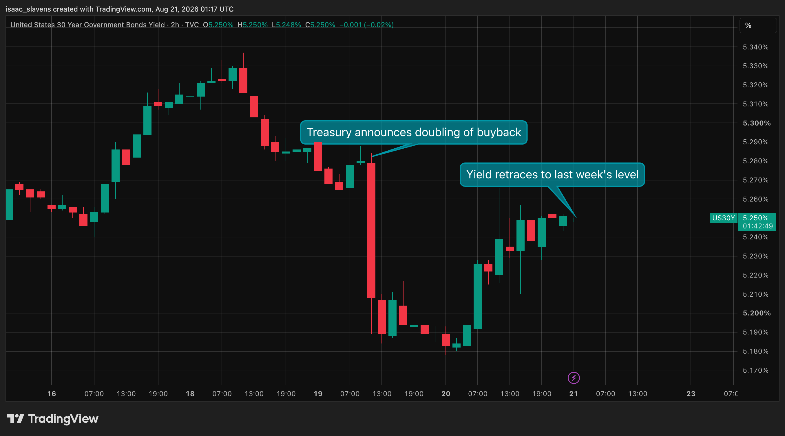
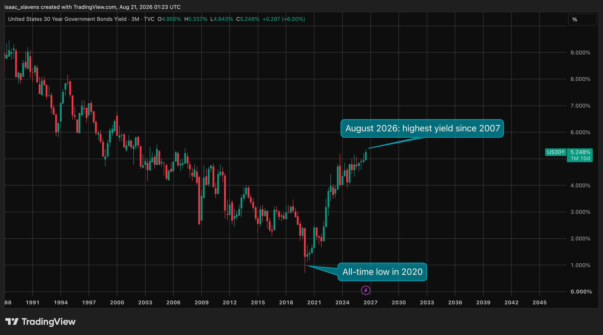

Scott Bessent and Kevin Warsh are two highly ambitious economists who ascended to their respective roles as Treasury Secretary and Federal Reserve Chairman in January of 2025 and May of 2026. Both of these names are absolutely fundamental to any analysis of both American and global macroeconomics, so I thought it fitting to make my first article focused on why these men matter, how their goals contrast one another, and how to view today's landscape through the lens of that contrast.
Most people don't know these names, but they are making some of the most consequential decisions in the world currently -- more so than the vast majority of political leaders. The Treasury Secretary and Fed Chair both have extreme influence on the economy: the former fiscal, and the latter monetary, but should their ambitions diverge, that distinction is prone to diminish significantly. Secretary Bessent is a growth maximalist, particularly when it comes to the development of AI, and Chairman Warsh is a student of the Austrian school with a stated goal of returning inflation to its 2% target. They were both sworn into office during this period in which rates remain elevated relative to the last decade, and they have both come to find that reality often has a way of humbling those with high ideals. Neither of them have been in office for very long, but it's safe to say that they are both a significant distance away from reaching their goals, despite the fact that those goals are polar opposite to one another.
Bessent recognizes that the most significant obstacle to his objectives is the "doom loop" of fiscal strain and inflation, of which his failing efforts to curtail have been making headlines as I write this. His 3-3-3 plan, in which he targets 3% GDP growth (currently hovering mildly above 2%), 3% budget deficits (currently at 6%), and an increase of 3 million barrels of oil per day, reflects the interest in a balance between high economic growth and fiscal responsibility. As of August 2026, the two most significant obstacles to his goals are the Iran war, and bond yields -- the former causes inflation, the latter reacts poorly to it and impedes investment. A great deal of Bessent's speech and action has been in an effort to swiftly resolve these obstacles, absent any success thus far. Within a 24-hour period, he stated on x.com that "Any remaining tie to Tehran will hasten a nation's economic oblivion," in addition to more than doubling the volume of 10-year and 30-year debt buybacks from two billion to four. How the stalemate in Iran will unfold in the coming months or years is unpredictable, but it is clear that the bond market is not interested in cooperating with intervention. The 30-year yield continues to climb higher, reaching a worrisome territory fiscally. It is up ~400 basis points since the Trump administration began, despite the federal funds rate being lower today than it was when he took office. High growth alongside deficit reductions becomes extremely challenging, or even impossible, with 10-year yields at 4.7%, 30-year yields above 5%, and neither of them showing any interest in mean reversion to comfortable post-GFC levels. As it stands now, interest expenses have exceeded one trillion dollars annually, which is more than the defense budget. This is also the highest that interest expenses have been as a percentage of GDP since 1991, except that in 1991, yields were ~2x as high as today.1


I have no doubt that Chairman Warsh is thrilled to see the bond market make his life easier by justifying his complacency and vindicating his concerns over inflation. Kevin Warsh's situation is no easier than Scott Bessent's, as he is bound by his personal and ideological loyalty to Milton Friedman, as well as a political loyalty to Donald Trump. Had he been appointed by a president who believed in Federal Reserve independence, perhaps the funds rate would likely be 50 basis points higher today. At the time that he was selected, many observers, including myself, were confused why the president would choose the most hawkish candidate available. Trump selected Warsh, whose stated belief is that the Fed has lost all credibility thanks to its decade of quantitative easing and the resultant inflation that it caused. In his July 2025 interview with the Hoover Institute, Warsh conceded that while QE was essential as an emergency measure in 2008, the continued expansion of the balance sheet for the following ten years was reckless. It is doubtful that Trump would have appointed a man who praises the tenure of Paul Volcker, without a high degree of confidence that he would remain on a short leash.
Bessent and Warsh's terms will most likely conclude within twelve months of one another, in the 2029-2030 period. The most important distinction between their roles and corresponding incentives is that the Treasurer can engage in global geopolitics, whereas the Federal Reserve has the luxury of focusing entirely on domestic data. The reason these two leaders would like to take the economy in opposing directions throughout their terms is informed in part by ideology, but also by the scope of their roles. The Fed operates under a simple mandate of maximum employment and stable prices, and their decisions are informed by data reports from the BLS and Census Bureau. Bessent is not just an economist, but also a politician in a highly interventionist and ambitious administration. Being one of the most ambitious among them, he does not value growth for its own sake -- he has made it clear that the primary economic objective of the United States throughout his term is to defeat China in the race for AI dominance. Earlier this year, he stated that "We are in an existential battle to maintain and accelerate technological dominance. The production and development of AI infrastructure will be crucial to both economic growth and national security in this next industrial revolution."2 Surely then, given these existential stakes, it is clearly a price worth paying for consumers to stomach a couple more years of 3.5% CPI growth. As I write this analysis, China is rapidly catching up to American models, and at much lower costs. It is hard to deny that the Trump Administration is justified in prioritizing AI dominance as a national security priority.
Warsh's luxury is that he does not need to be concerned with foreign affairs; the inflation and employment statistics read 'X' and 'Y', and therefore determine that the policy rate should be 'Z'. Bessent's luxury is that he is not bound by the rigid constraint of a "mandate", but rather, has one of the most powerful yet versatile roles in the world. The tricky situation that the U.S. finds itself in, is that in order to prioritize national security in the long-term, consumer welfare objectively must continue to suffer in the short-term. There is no realistic situation in which inflation can be brought down without investment spending in AI infrastructure taking a massive blow. One must also wonder how sustainable this tradeoff is, given that the median voter is rapidly beginning to resent current technological developments, and the datacenter investment and cultural revolution associated with them. Many politicians, notably Texas Governor Abbott, are already jumping on this anti-datacenter bandwagon as today's winning bipartisan issue.
It is impossible and also unproductive to predict whether Warsh will have his way, risking a slowdown or collapse in the AI revolution, or if Bessent will have his way, risking extreme inflation. Regardless, it is valuable to recognize that this demonstrates a healthy balance of powers. Both consumer welfare and AI growth are important, and this dichotomy of priorities and motivations, while imperfect, is in all likelihood preferable to either one of these men having his way entirely.